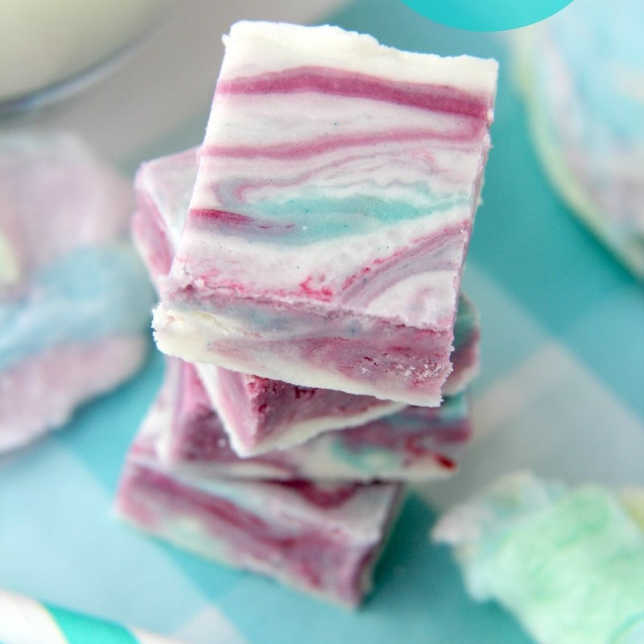

PICK N MIX ICE LOLLIES
Ingredients
- 160g Haribo Tangfastics
- 100g Gummy Bears
- 75g Fizzy Rainbow Belts
- 680ml Lemonade
Method
- Fill ice lolly moulds with a selection of sweets.
- Fill the moulds to the top with lemonade.
- Push in a wooden stick.
- Place the moulds in the freezer for a minimum of 5 hours.
COTTON CANDY FUDGE

Ingredients
- 400g Sugar
- 170g Butter
- 340g White Chocolate
- 200g Marshmallow Fluff
- 180g Heavy Whipping Cream
- 2tsp Cotton Candy Flavour
- 2tsp Pink Food Colouring
Method
- Line a 13x9 inch tin with foil and spray with a non-stick spray.
- Combine the sugar, butter and cream in a saucepan, and stir on a low heat until the sugar has dissolved.
- Once the sugar has dissolved, bring the pan to boil for 4 minutes.
- Remove from heat and add the marshmallow fluff and white chocolate, then stir until melted.
- Pour 3/4 of the liquid into the foil lined tin.
- Add cotton candy flavouring to the rest of the mixture in the pan, then pour into the tin.
- Add 3 drops of pink food colouring to various places in the tin, using a knife to swirl the colour.
- Cover the tin, and allow to set in the fridge.
- Once cooled, remove the fudge from the tin, slice into squares, and serve.
RICE KRISPIE TREATS
Ingredients
- 45g Butter
- 280g Marshmallows
- 200g Rice Krispies
Method
- In a large saucepan, melt the butter over a low heat.
- Once the butter is melted, add the marshmallows and stir until completely melted.
- Remove the saucepan from the heat.
- Add the rice krispies and stir until completely coated.
- Scoop the mixture into a 13x9 inch tin coated in a non-stick spray.
- Place in the fridge to cool.
- Once cooled, cut into squares and serve.
HOMEMADE PEPPERMINT PATTIES
Ingredients
- 60g Softened Butter
- 115g Light Corn Syrup
- 2tsp Peppermint Extract
- 300g Powdered Sugar
- 350g Dark Chocolate
Method
- Combine the butter, corn syrup, powdered sugar and peppermint extract into a mixing bowl.
- Stir the mixture with an electric whisk until everything is combined.
- Remove the dough from the bowl and roll into walnut sized balls.
- Place the dough balls onto a baking tray covered in parchment paper and flatten the gently.
- Place the tray in the freezer for 10-15 minutes.
- Melt the dark chocolate, then let it sit for 1 minute.
- Remove the peppermint dough balls from the freezer and dip them into the melted chocolate, then place them back on the baking tray.
- Leave to dry, and keep in the fridge.